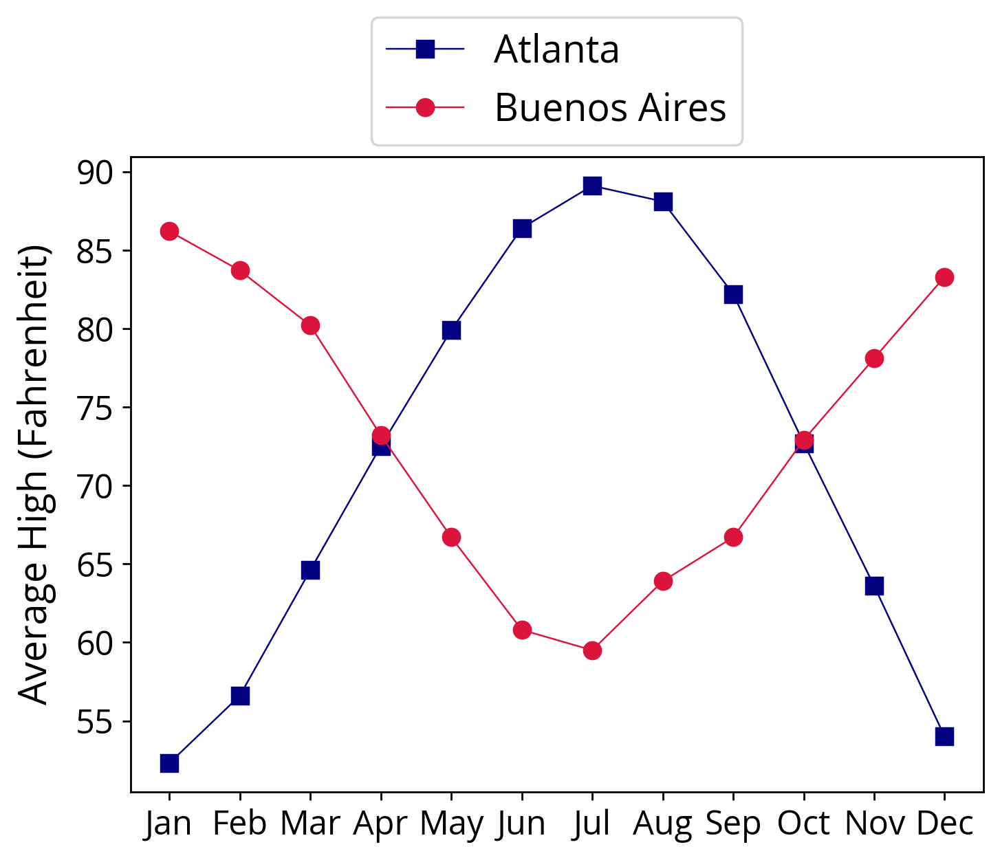
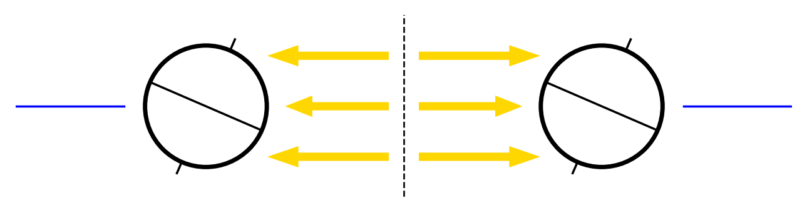

This essay is also available as a printer-friendly PDF.
Seasons evade easy definition. A dictionary will report that seasons are the four divisions of the year known as spring, summer, autumn, and winter, however as with all dictionary entries this only leads to other words that need defining. It could be said that seasons are the breath of the Earth, for the world's plants absorb vast quantities of carbon dioxide as their leaves grow in the spring, releasing the oxygen that all animal life needs to survive. Yet the manifestations of seasons are so varied and so rich that to focus on any one could fill an entire volume. Rather than look outward at those manifestations, let us instead turn back and examine language itself.
The English word season comes from the Latin verb serere meaning to sow
or to plant.
Looking back even further, the Latin serere may come from the Proto-Indo-European root *sē-, also meaning to sow,
which is related to the English word seed. This hypothetical language, spoken 5,000 years ago or more, is thought to be the common ancestor of hundreds of living languages, ranging from Iceland to the Bay of Bengal. Thus seasons became associated with sowing seeds, and thereby harvesting crops, far back in history, and indeed prehistory.
Early humans obtained food by hunting animals and gathering wild plants. They were likely nomads, following the annual migrations of herds. This hugely successful strategy remained essentially unchanged for tens of thousands of years. But beginning around 12,000 years ago, some groups of people started planting seeds. Understanding seasons had always been essential to survival, but it now took on new urgency. Failure to sow at the proper time could result not only in the starvation of a family but of an entire city as populations began to rise. Just as importantly, farming required staying in one place for much or all of the year to watch over the crops, changing the concept of geography.
But are seasons still relevant today? In the age of industrialized agriculture and global commerce it is possible to purchase almost any food item at any time of year. As more people spend much of their waking hours in air conditioned buildings looking at electronic devices, the alienation from nature may seem all but complete. Still, many millions of people depend directly on farming for their living, and even the most technology-savvy city dweller at least occasionally longs for spring wildflowers and autumn leaves. If you are that latter person, or anyone who desires to look more carefully at nature, I hope this essay may sow a seed that proves fruitful.
As we have seen, despite its connotations of change, the word season itself implies planting, that is to say being in a particular place. In fact the experience of seasons greatly depends on one's location. To see how, allow me to paraphrase Charles Dickens. It was the coldest of times, it was the warmest of times. . . .
I am comparing not Paris to London, but my home city of Atlanta, Georgia to Buenos Aires, Argentina, some 5,000 miles to the south. It is the final hours of December 31, and revelers are gathering to celebrate the arrival of a new year. In Atlanta, the crowds pull up their jacket collars against a chill wind that rattles the bare branches of trees. Meanwhile in Buenos Aires, people in short-sleeved shirts enjoy a warm breeze that rustles the overhanging leaves. Here then is the key fact about seasons that must be explained: the northern and southern hemispheres do not experience the same season at the same time of year. When it is winter in Atlanta it is summer in Buenos Aires.
The overall pattern is visualized in the chart below, which shows the average high temperature in each month of the year in both cities. While January is the coldest month in Atlanta, with high temperatures in the low 50s °F, it is the warmest month in Buenos Aires, with highs in the mid 80s °F. As the year unfolds, temperatures rise in Atlanta and decrease in Buenos Aires. Come July, the highs in Georgia's capital are around 90 °F (and often quite higher!), but are only around 60 °F in the Argentine capital. It is now summer in the northern hemisphere and winter in the southern. After July, temperatures decrease in Atlanta and increase in Buenos Aires until December, when the cycle starts over.
By only considering average monthly high temperatures, I have ignored finer details of weather and climate. For instance, a passing cold front could make the final week of autumn colder than the first week of winter. Due to its proximity to the Atlantic Ocean, Buenos Aires has somewhat warmer winters and cooler summers than Atlanta, which is about 200 miles from the sea. But the general trend of opposing seasons in the northern and southern hemispheres is the most important. To understand why this occurs, we need to consider not just two cities but the entire Earth.
Imagine the Earth as a sphere, three inches across, that can fit in the palm of your hand. It feels cold, because the bottom of the sphere is covered in ice, as is the top. Most of the rest is covered in water, but some is covered in land of different shades of brown and green. You have a pretty good idea of the shapes of the land and can identify your current location. For example, I am writing this in Atlanta, located in the top
half of the sphere. Next, visualize the equator as a belt that stretches across the widest part of the Earth, dividing the northern and southern hemispheres.
I have provided you with an imaginary toothpick. Stick the toothpick through the icy top of the Earth so that it passes through the middle and comes out of the icy bottom, just as you would an exotic hors d'oeuvre. Be careful not to poke the palm of your hand. Notice how the North and South Poles, where the toothpick emerges from the surface, are as far as possible from the equator. Now you are able to grab the ends of the toothpick and spin the Earth. Looking down from above at the North Pole, the Earth rotates counter-clockwise, as if you were loosening a bolt. The toothpick is the Earth's rotation axis, although in reality it is invisible and not made of wood.
Seasons result from the relationship between the Earth's rotation axis and its orbit, the nearly circular path with the Sun at its center that the Earth completes once every year. If the Earth is a sphere that fits in the palm of your hand, the Sun is a sphere about the same length as a school bus located one mile away. This is not a very practical scale to work with, so we will shrink the Sun so that it is the size of a soccer ball and move the Earth closer so that its orbit will fit on an average dining room table. The table itself is crucial because its surface is flat, as opposed to the inside of a bowl, for example, which is curved. In geometry, a flat surface such as a tabletop is called a plane. As the Earth orbits the Sun it remains in its orbital plane; in other words it stays on the tabletop instead of going above or below it.
Holding the Earth by the top of its rotation axis toothpick, rest the bottom of the toothpick on the table. If the rotation axis struck straight out of the table, it would be perpendicular to the orbital plane, just as the stem of an upper case T is perpendicular to the line on the top. However, the Earth's rotation axis is not perpendicular to its orbital plane. In our analogy, the toothpick tilts over to one side like the slash in a fraction such as 1/2 or 3/4. This tilt may seem insignificant, but it is actually what causes seasons. Don't despair if all these visual metaphors and geometric terms are confusing. In a moment I will show you a diagram, but first we need to add one more ingredient.
Virtually all life on Earth depends upon sunlight. Plants absorb energy from the Sun and use it to grow. Some animals eat those plants and are in turn eaten by other animals. As a human you may choose where to enter the food chain, but you cannot choose to live in a world without plants. Sunlight also heats the surface of the Earth, both land and water, driving the weather patterns that we commonly think of as seasons.
Our soccer ball-sized Sun is aglow on our dining room table. We will imagine it as a harmless light bulb because in reality its surface is hot enough to easily melt steel. The Sun sends out light in every direction in the form of rays like the spokes on a bicycle wheel. Only a tiny portion of these rays reach the Earth because it is so far away from the Sun, but thanks to the Sun's enormous energy output, these rays are enough to sustain our planet.
At last we can combine everything into a single diagram to understand seasons. The two circles represent the the Earth at two crucial points in its orbit known as the solstices, which occur around June 21 and December 21 every year. At the solstices, the effects of the Earth's tilted axis are most extreme, and so these dates make the visual representation of seasons easier. The lines sticking out of the tops and bottoms of the circles are the Earth's rotation axis, our toothpick. Because the rotation axis is tilted, the equator is not parallel to the Earth's orbital plane, our tabletop, which is indicated by the blue horizontal lines on the far ends of the diagram.
The vast distance between the Earth and Sun makes it impossible to accurately show both objects at a reasonable size on the same page. Even our tabletop analogy is too large, so I have omitted the Sun from the diagram and focused instead on rays of sunlight, shown as yellow arrows. The dashed vertical line in the center reminds us that these rays have traveled a long way from the Sun. Notice how the rays travel parallel to the Earth's orbital plane.
Looking at the left circle corresponding to June, two rays strike the northern hemisphere while one strikes the southern. The northern hemisphere therefore receives more energy from the Sun, making it warmer than the southern hemisphere. As we would expect in June, it is summer in the north and winter in the south. Turning to the right circle, the situation is reversed. Two rays strike the southern hemisphere while one strikes the northern. In December the south receives more sunlight and experiences summer while the north experiences winter. Remarkably (and perhaps a bit disappointingly), all of the beautiful phenomena associated with seasons come down to the subtle geometry of the Earth's rotation and its orbit.
Now we are prepared to address a common misconception. Seasons are not caused by the Earth moving closer to and further from the Sun. There are two main problems with this idea. First, the Earth's orbit is nearly a perfect circle, so the small variation in distance from the Sun over the course of a year, about 3%, is too small to explain such a large variation in temperature. The second problem is more fundamental. If a change in distance were responsible, both the northern and southern hemispheres would experience the same season at the same time. Only the Earth's tilted rotation axis can explain the pattern of opposing seasons in the two hemispheres.
However, by treating the hemispheres as unified regions I have neglected some important details of geography. The arctic regions near the poles receive the least sunlight and are consistently cold. In contrast, the region near the equator, known as the tropics, is least affected by the axial tilt and receives roughly the same amount of sunlight all year, and so remains consistently warm. Nearly half of the world's population lives in the tropics; thus billions of people do not experience four distinct seasons, having instead a rainy season and a dry season. But nowhere on Earth can one completely escape seasons.
I am fortunate to live near a large nature reserve. My walk there takes me over a bridge that crosses a busy set of railroad tracks. Occasionally I can look down into open-roofed freight cars filled to the brim with coal, perhaps on its way to provide the electricity to write this essay. I think about the millions of years it took to form those mountains of combustible black rock, and about how quickly they are being consumed, in the blink of an eye to the ancient Earth. The rumble of the train fades away as I cross the bridge and stroll into a green cathedral of beeches and oaks.
We began this essay by exploring how the word season dates back thousands of years to the invention of agriculture, and therefore to the rise of civilization itself. Today civilization threatens to change the meaning of seasons as our species rapidly transforms the Earth's climate. Temperatures and sea levels are rising while droughts and storms are becoming more severe. The dangers are serious, and yet the climate has changed before and humans adapted to it then. No one can be certain what the future holds, but sowing seeds and harvesting crops, seasons in their original sense, remain as vital as ever.